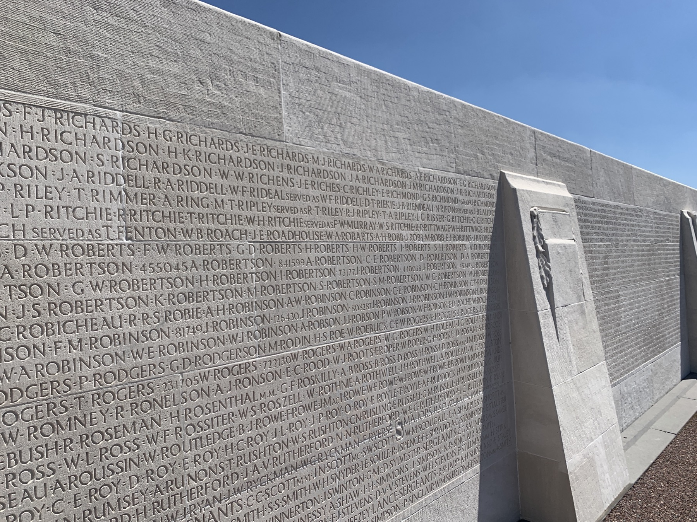

Not only is he extremely knowledgeable, but he also has a wonderful rapport with people in general. Throughout our tour, Joe shared fascinating and detailed stories about soldiers who fought there.
GT
Grace TittleyBattlefield guest

A battlefield historian who has spent his life carrying the story of Canada's First World War — and who will spend your tour helping you carry a piece of it home.

Joe MacDonald has carried a passion for military history since childhood — carrying on that early fascination into a specialisation in the Canadian experience of the First World War. He is, in the words of guests and fellow guides alike, "recognized as one of the best in the business," known for a rare combination of encyclopaedic knowledge and a natural gift for storytelling.
What sets Joe apart is his familiarity with the ground itself — a battlefield today largely hidden in plain sight. He supplements his extensive knowledge with a deep comprehension of the people who fought there, bringing the past vividly into the present through personal and official testimony.
"Joe is passionate and very enthusiastic about imparting his impressive knowledge and understanding of Canadians during the First World War... preserving our Canadian military legacy and heritage."
— Brigadier General (Retd.) Nic Stanton
Whether you're a first-time visitor with little prior knowledge of the Great War, a serving member of the Canadian Armed Forces, or a family hoping to find a great-grandfather's gravesite, Joe tailors each tour to your interests. Ask him to focus on a specific regiment, a specific soldier, or simply to tell the full and heroic story — he is, as one guest put it, "the person you want to lead you through this remarkable period in history."
Professional and approachable, with a healthy sense of humour — the perfect combination to lead tours that include guests of every age, gender and background.
From individual veterans to serving soldiers, Joe has a proven ability to enhance existing military knowledge, not just introduce new visitors to the subject.
Joe researches your relative's service record ahead of the tour, then builds actual site visits into your itinerary — turning a family name into a place you can stand.
Not only is he extremely knowledgeable, but he also has a wonderful rapport with people in general. Throughout our tour, Joe shared fascinating and detailed stories about soldiers who fought there.
Without hesitation I would recommend Joe to anyone wishing to see the Battlefields of Europe. There wasn't a dull moment for the three days we spent with him.
Mr. MacDonald molded around our experiences and knowledge in ways that enhance our understanding — a respectful young man who builds a new foundation with each audience.
Choose a tour, or send us your family's story first and we'll build it into your journey.